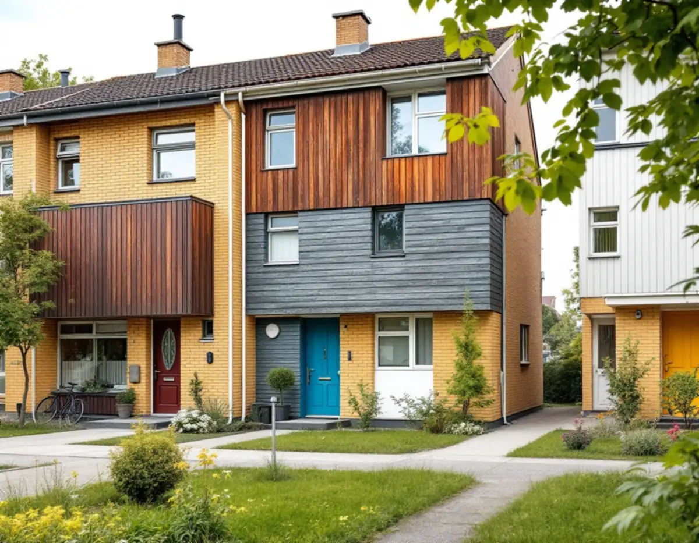
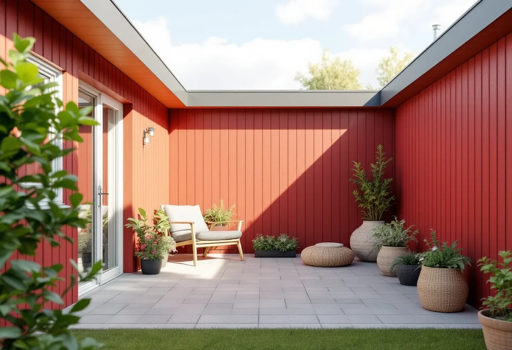
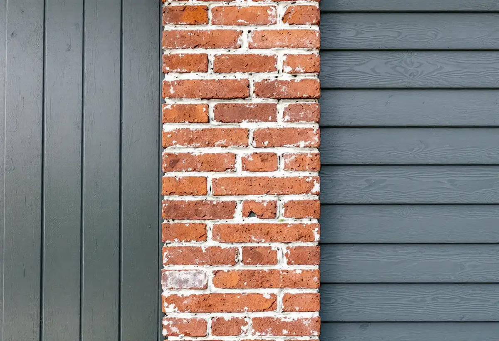

Ägarform
Vi reder ut om du eller föreningen beställer målningen.
Småhusen i Kista och Akalla byggdes i grupper där fasadmaterial och kulörer bestämdes för hela gruppen. När ett hus målas om påverkar det alltså mer än det egna huset. Geal Entreprenad AB målar om fasader på radhus, kedjehus, villor och atriumhus i Kista och utgår från husgruppen när kulören väljs.

Enligt Stadsmuseets skrift om Kista i serien Stockholms spår byggdes stadsdelen ut 1975–1980, och staden tillämpade här betydligt friare former för den arkitektoniska utformningen än i de övriga stadsdelarna på Järvafältet. Man strävade också efter att samlokalisera arbetsplatser, bostäder, service och kollektivtrafik.
I stadens strategi Varsam räknas Akalla och Husby till de storskaliga stadsdelarna, och strategin nämner Akalla som exempel där det byggdes villor och atriumhus vid sidan av radhusen och kedjehusen.

Varsam beskriver hur småhusen i de storskaliga stadsdelarna ofta fick en blandning av fasadmaterial som tegel, trä och skivor, medan enhetligheten inom husgrupperna var mycket stor. Färgsättningen var noga komponerad och enhetlig, men kunde variera mellan olika kvarter eller områden.
För en fasadmålning betyder blandningen att varje material behöver sin egen bedömning. Riksantikvarieämbetet påpekar att man först måste känna till hur den befintliga målningen är utförd och i vilket skick den är, och skilja skador som beror på naturligt åldrande från sådana som beror på brister i underlaget eller ett olämpligt färgval.
Stadens områdesfakta för 2025 visar 482 småhus med äganderätt och 404 i bostadsrätt i stadsdelen Kista. I Akalla är 493 småhus bostadsrätter och 170 äganderätter. I en förening är fasaden i regel gemensam och målas i ett sammanhang för hela gruppen.
Äger du ditt hus själv bestämmer du, men eftersom färgsättningen var tänkt för hela gruppen är det klokt att stämma av kulören med grannarna. Stockholms stad räknar byte av kulör som fasadändring, och lovfria fasadändringar ska ändå stämma med detaljplanen.
Ett atriumhus har en del av sina fasader vända in mot en egen gård. De väggarna syns inte från gångvägen och vetter åt andra väderstreck än husets yttre fasader, så de åldras inte i samma takt. Riksantikvarieämbetet påpekar att söderfasader behöver målas om oftare än norrfasader och att utsatta delar som vattbrädor, räcken och fönster bör underhållsmålas löpande.
Vi bedömer därför gårdsväggar och yttre väggar var för sig. Om måleri i Kista i övrigt, även inomhus, kan du läsa under målare i Kista.
Stockholms stad påpekar att en fasadändring som inte kräver bygglov ändå ska stämma överens med detaljplanen, eller vara en liten avvikelse som inte motverkar planens syfte. Detaljplanen för fastigheten finns i stadens e-tjänst Bygg- och plantjänsten, och där kan du också själv ta fram äldre handlingar som stadsbyggnadskontoret har för huset.
Staden skriver dessutom att det finns äldre miljöprogram och typritningssamlingar som går att beställa. De har ingen juridisk status i bygglovsprövningen, men är ett bra underlag för att förstå ett områdes karaktär. För en husgrupp där kulörerna en gång valdes samlat kan sådana handlingar visa hur färgsättningen var tänkt.
Riksantikvarieämbetet rekommenderar att uppgifter om vilka material renoveringen utförts med bevaras. I en husgrupp där många hus ska ha samma kulör är det extra viktigt, eftersom nästa ägare eller nästa styrelse då vet vad som använts.
Vi lämnar uppgift om färgtyp, kulör och tillverkare när arbetet är klart. Om snickeriarbeten som uterum och förråd i stadsdelen kan du läsa under snickare i Kista.

Vi reder ut om du eller föreningen beställer målningen.
Tegel, trä, skivor och nuvarande målning bedöms var för sig.
Kulören stäms av mot grannhusen och detaljplanen.
Per hus eller per grupp när flera målas samtidigt.
Tvätt, förarbete och strykning anpassad efter varje material.
Färgtyp, kulör och tillverkare lämnas efter arbetet.
Utvändig målning av ett småhus som du äger och bor i räknas som rotarbete hos Skatteverket. Avdraget gäller arbetskostnaden, inte färgen. I en bostadsrätt ger arbete på gemensamma ytor som fasader inget rotavdrag.
Avdraget är högst 30 procent av arbetskostnaden, högst 50 000 kronor per person och år och högst 75 000 kronor tillsammans med rutavdrag. Material och resor ger inget avdrag. Geal drar avdraget direkt på fakturan.
Andelen trä och skivor som ska målas, förarbetets omfattning, antal hus i gruppen, kulörer och ställning. Efter ett gratis platsbesök får du eller föreningen ett skriftligt kostnadsförslag.
Fasad, fönster och invändig målning.
Målare i Stockholm →Takbyte, takbesiktning och plåtarbeten.
Takläggare i Kista →Låga tak, tätskikt och takbrunnar från 1970-talet.
Takrenovering i Kista →Radhusen, föreningen och ventilationen.
Badrumsrenovering i Kista →Uterum, altan och föreningens tillstånd.
Byggföretag i Kista →Panel, skivor och isolering på radhus.
Fasadrenovering i Kista →1970-talets radhusfönster.
Fönsterrenovering i Kista →Nya golv på betong i radhus och lägenheter.
Golvläggare i Kista →Golvslipning i bostadsrätt, hyresrätt och radhus.
Golvslipning i Kista →Småhus i förening och kök från 1970-talet.
Köksrenovering i Kista →1970-talets hus, asbest och ROT.
Målare i Kista →Garderober, väggar och dörrar i lägenheten.
Snickare i Kista →Platta tak och pulpettak.
Takbyte i Kista →